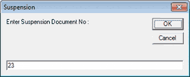
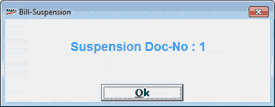

During billing at a POS location, there would be situations where bills have to be put on hold. For example, the customer stops the billing process midway to add some more items to the cart. In such a scenario the employee at the billing counter should be able to suspend the bill and continue with other billing. The suspended bills can be recalled later.
On Suspension of a bill, the system generates (configurable) a unique number as Suspended Doc No. and you can recall the suspended bill with this number to proceed with billing.
During billing, bills are suspended by pressing F12 from the Billing window.
The manual entry window for Suspension Document No is displayed.

The system generated Suspension Document No (if the corresponding system parameter is set) is displayed.

The Suspension Doc-No can be printed as soon as a bill is suspended. To enable printing, you need to select the system parameters Print Bill Suspension and POS Printing ON under the category Bill - Printing.
A bill can be suspended several times. For example, you can recall a suspended bill, add some more items to it and suspend the bill once again.
Note: The Suspended Bill Number can be reused after recalling it for billing.